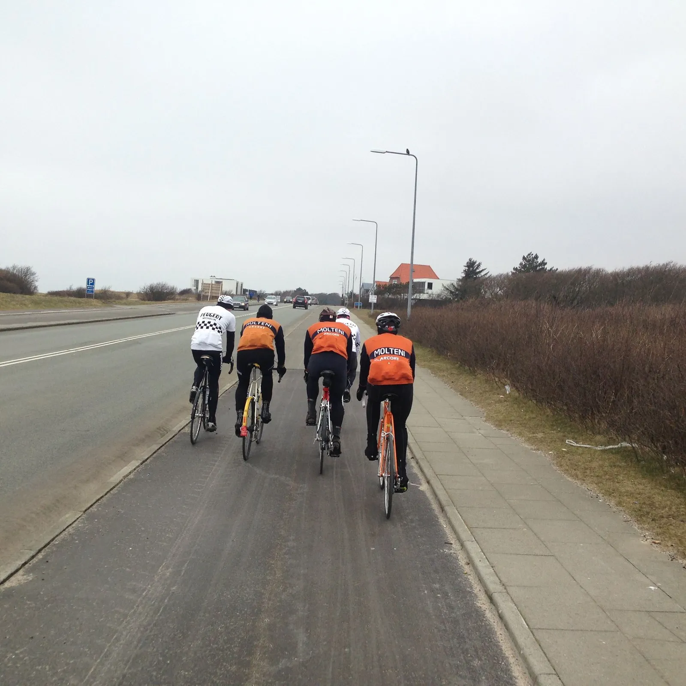
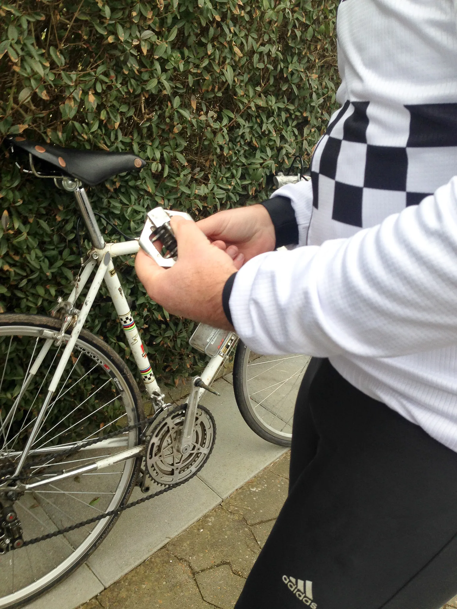
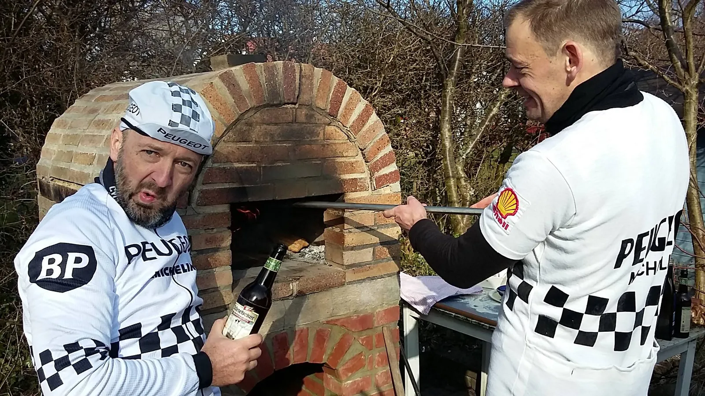

Årets første træningssamling i Esbjerg

Morgendis, hvide mænd og orange uld – og to hvide skakternede. Årets første træningssamling for Squadra Molteni & Peugeot Re-Cycled udgik fra Esbjerg.
Jens Auer fra Peugeot Re-Cycled var vært for træningssamlingen, og han havde planlagt en super fed rute på små 100 km gennem det betagende, vindblæste og flade vestjyske landskab.

Seks forårskåde retroryttere, stod klar lørdag morgen til at komme ud på landevejen.
Defekt efter 5 meter
Men det blev kun til ca. 5 meter! – så fik Morten Mejsen (som sædvanlig) defekt.
En pedal faldt af hans franske cykel.

Peugeot holdet måtte en tur i værkstedet (og der skal noget af et værksted til, for at holde en Peugeot kørende) – og lidt efter var der afgang igen.
Jens Auer lagde turen ud gennem Esbjerg, forbi “Mennesket ved Havet”, de fire hvide mænd, som sidder ser og ud over Vesterhavet.
Esbjergs “Strade Bianche”
Efter Esbjergs mondæne strandvej ramte vi første strade bianche.
En sindsyg flot grusvej, der snoede sig mellem gamle vesterhavsgårde og lyngklædt landskab.
Skiltespurten-dysten
Turen fortsatte over Oksbøl og syd på mod Ho.
Her kom en hvid og skakternet cykeltrøje farende, som skudt ud af en kanon.
Morten Mejsen vandt skiltespurten – og meldte dermed krig mod Squadra Molteni.
Lidt efter viste Grane, at han er Squadra Moltenis supersprinter ved at vinde skiltepurten i Blåvand-Oksbøl.
Stillingen var 1-1.
Efter Blåvand-Oksbøl ramte vi strade bianche nummer to.
Hjemmebagt energibarer
En snorlige 6,5 km lang grusvej gennem Kallesmærsk Hede, hvor der også blev tid til et hurtigt pitstop med indtagelse af Steffen Sørensens hjemmebagte müslibars.
Turen tilbage mod Esbjerg bød på tempokørsel med rulleskift og på endnu 2-3 skiltespurter.
Her viste Squadra Molteni tænder, men også håbløs dårlig taktik.
Morten Mejsen blev på det nærmeste båret frem til hver byskilt.
Eller var han bare en gammel snu ræv? Da vi nåede Esbjergs udkant ramte vi strada bianca nummer tre.
En 3,5 km lang grussti gennem bl.a. Esbjerg Nørreskov og dyrepark. Og selvfølgelig skulle vi lige forbi de fire hvide mænd igen. Fotos skulle tages.
Hjemmelavet pizza i udendørs ovn
Hjemme hos Jens havde hans hustru tændt op i pizzaovnen i baghaven – og Jens tryllede den ene fantastiske pizza frem efter den anden.

Det blev til 16 pizzaer! og lækre tyske piratøl.
Tak for en skøn tur og dejlig dag.